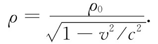

对于上面当我们对粒子和对导线里的传导电子均取同样的速度v时所作的那种简化手续，你可能会感到担心。本来尽可以返回去并对两个不同速度再进行分析，但更方便的却是去注意电荷和电流是一个四维矢量的分量（见第1卷第17章）。
我们已经知道，若在静止参照系中的电荷密度为ρ0 ，则在具有速度v的参照系中，该密度为

在这参考系中电流密度为
原来我们知道，一个以速度v运动着的粒子其能量U与动量p分别由下列两式给出：
其中m0 为粒子的静质量。我们也知道，U与p构成一相对论性四维矢量。由于ρ和j与速度v的关系同U和p与速度的关系一样，所以我们便可以断定，ρ和j也是 一个相对论性四维矢量的分量。这一性质就是对以任一速度运动着的导线之场进行普遍分析的钥匙。如果我们想要对线外粒子速度v0 不同于那些传导电子速度的问题再次谋求解决，就需要这一把钥匙。
如果我们希望把ρ和j变换到以速度u沿x轴运动的一个坐标系中，则我们知道，它们应该恰好如同t和（x，y，z）那样变换（见第1卷第15章）：
有了这些方程式，我们就能把两个参照系中的电荷和电流互相联系起来。取得其中一种参照系中的电荷和电流后，我们便能通过应用麦克斯韦方程组解出在该参照系中的电磁学问题。不管我们选取哪一个参照系，所获得的关于粒子运动 的结果将会彼此相同。稍后我们还将回到有关电磁场的相对论性变换上来。